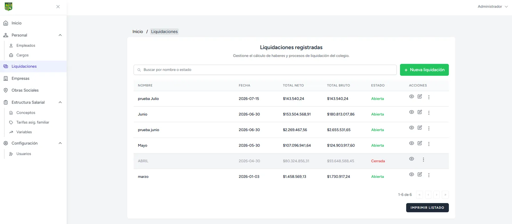
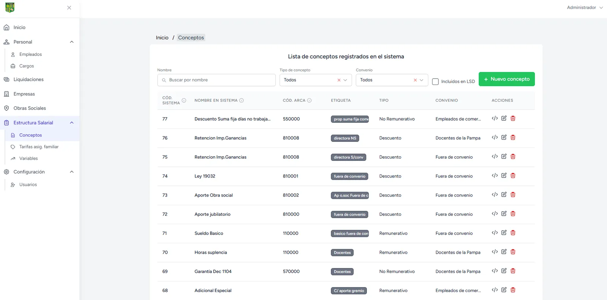
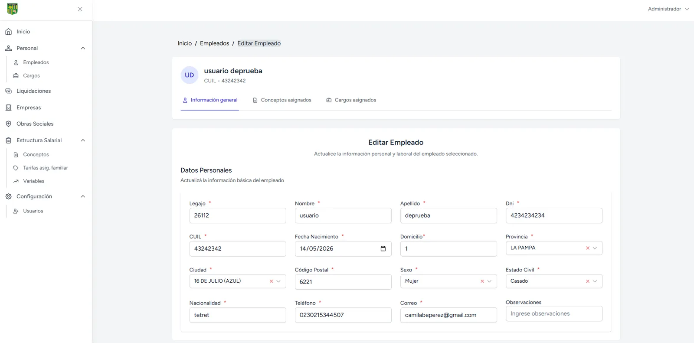
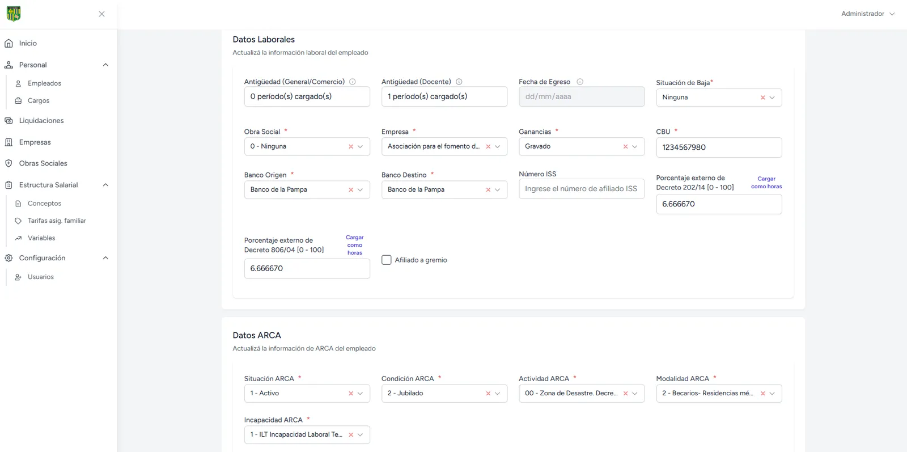
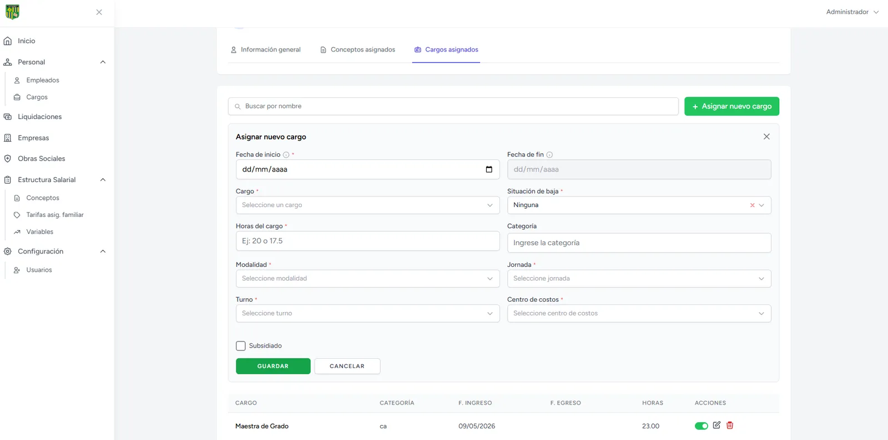
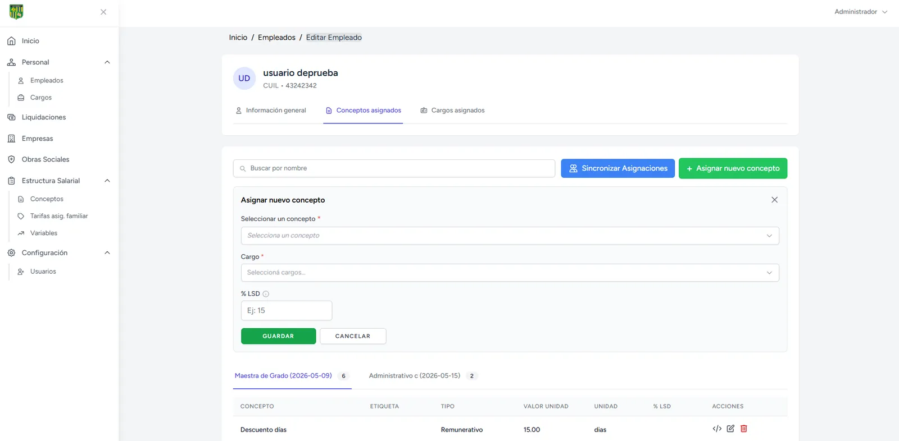

Backend · Sistema en producción
Liquidación de haberes para Los Caldenes, una institución de La Pampa, con motor de cálculo configurable e integración directa a AFIP.
Los Caldenes es una institución de La Pampa con dos tipos de personal muy distintos entre sí: docentes, bajo el convenio "Docentes de La Pampa", y personal de comercio, bajo el convenio de Empleados de Comercio, además de personal fuera de convenio. Cada grupo tiene su propia escala salarial, sus propios conceptos remunerativos y no remunerativos, y sus propias reglas de aportes y contribuciones. Necesitaban un sistema propio que pudiera calcular todo eso —básico, antigüedad, presentismo, aguinaldo, asignaciones familiares— sin quedar atado a una única forma de liquidar, y que además cumpliera con lo que exige AFIP: generar el Libro Sueldo Digital y presentar la información previsional en el formato que pide el organismo.
Formo parte del equipo que desarrolla y mantiene el sistema desde agosto de 2024, junto a dos compañeras más. Trabajo full-stack: backend en Laravel —modelo de datos, migraciones, controladores, integración con los webservices SOAP de AFIP— y frontend en Vue vía Inertia, incluyendo buena parte del motor de cálculo de liquidación que corre del lado del cliente.
En vez de hardcodear las reglas de cada convenio, cada concepto de liquidación (básico, antigüedad, presentismo, SAC, asignación familiar...) se define con una fórmula editable, usando funciones propias tipo Excel (SI, MAX, MIN, ANOS_ENTRE, porcentajes de antigüedad docente) y variables reutilizables. El motor evalúa esas fórmulas dinámicamente para cada empleado y cargo, calcula el aguinaldo comparando la mejor remuneración del semestre entre convenios, y resuelve bases imponibles y aportes diferenciados por rubro (SIPA, INSSJyP, obra social, ART, asignaciones familiares). Esto permite ajustar un concepto o sumar uno nuevo cuando cambia una escala o un decreto, sin tocar el código del sistema.






El sistema está en producción y en desarrollo activo desde hace casi dos años, con mejoras constantes a pedido del cliente. Como próximo paso, me gustaría sumar tests automatizados sobre el motor de cálculo y la generación de AFIP, hoy la parte del sistema con menos cobertura.